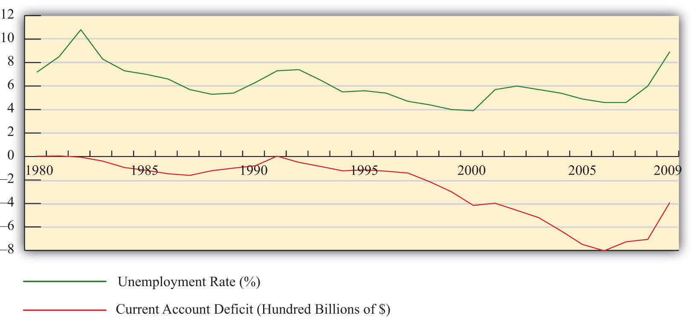
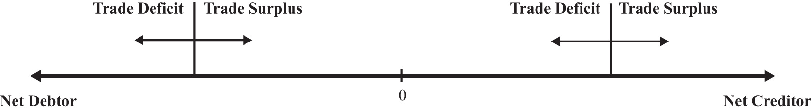

One of the most misinterpreted and misunderstood concepts in international finance is the implication of a country’s trade deficit or surplus. Often it is incorrectly presumed that a trade deficit is problematic while a trade surplus is a sign of economic strength. This chapter walks the reader through a thorough investigation of trade imbalances—what they mean and how to interpret them. The chapter concludes that trade deficits can indeed be a big problem for a country, but not always. Trade surpluses can also be a sign of strength, but again, not always. Whether a trade imbalance for a particular country should be viewed as good, bad, or benign depends on many other economic circumstances. This chapter spells out what those circumstances are.
There is a popular and pervasive myth about international trade. The myth, simply stated, is that trade deficits are bad and trade surpluses are good. Good or bad for whom, one might ask? Well, for the entire country.
The presence of a trade deficit, or an increase in the trade deficit in a previous month or quarter, is commonly reported as a sign of distress. Similarly, a decrease in a trade deficit, or the presence of or increase in a trade surplus, is commonly viewed as a sign of strength in an economy.
Unfortunately, these perceptions and beliefs are somewhat misguided. In general, it is simply not true that a trade deficit is a sign of a weak economy and a trade surplus is a sign of a strong economy. Merely knowing that a country has a trade deficit, or that a trade deficit is rising, is not enough information to say anything about the current or future prospects for a country—and yet that is precisely how the statistics are often reported.
The truth about trade deficits is that sometimes they are good, sometimes they are bad, but most times, they are benign (i.e., they just don’t matter). There are situations in which trade deficits could be interpreted as a sign of a strong thriving economy. There are other situations in which trade deficits could be indicative of economic problems. In most situations, however, trade deficits are not large enough to warrant a positive or negative interpretation. In this case, they should be viewed without interest. These same points apply to trade surpluses as well.
The purpose of this chapter is to explain, clearly and intuitively, the circumstances in which trade imbalances should be interpreted as good and the circumstances in which they are bad. The section will show situations in which trade deficits can indeed lead to long-term harm for an economy. However, it will also show cases in which trade deficits significantly improve a country’s long-term economic prospects. We will highlight cases in which trade surpluses are appropriate and a sign of strength for a country, and we will show other cases in which trade surpluses may correspond to current demise or even an eventual collapse of an economy.
Most important, one should realize after reading this chapter that merely knowing that a country has a trade deficit or surplus is not enough information to say anything substantive about the strength of a country or its economic prospects.
Jeopardy Questions. As in the popular television game show, you are given an answer to a question and you must respond with the question. For example, if the answer is “a tax on imports,” then the correct question is “What is a tariff?”
One of the main reasons trade deficits are considered deleterious is because of a common argument that trade deficits result in job losses. The rationale behind this argument is simple and convincing. There are two parts to the story that begin with the definition of a trade deficit.
First, a trade deficit arises whenever imports exceed exports. One simple reason for an imbalance of this kind is that imports are too large or at least larger than they would be under balanced trade. The most common reason offered in developed countries for why imports are too large is that low import prices arise because less-developed countries have exceedingly low wages paid to workers, lax health and safety standards, or more lenient environmental policies, all of which contribute to a veritable flood of imports.
The effect of excessive imports is said to be the purchase of cheaper foreign goods by domestic consumers rather than purchasing the slightly more expensive domestic varieties. As demand for domestic firms’ products falls, these firms are forced to downsize, resulting in the layoff of domestic workers. Thus it is said that trade deficits cause the loss of domestic jobs.
The second story argues that the reason imports exceed exports is because exports are too low; they are smaller than they should be. The most common reason given for low exports, especially in the developed countries, is the relatively high barriers to trade in developing countries. Although many countries participate in the World Trade Organization (WTO), the average applied tariffs still remain considerably higher in developing countries.
The effect of insufficient exports is that products that could be produced and sold abroad are not produced and sold abroad because of the barriers to trade. If the barriers were only removed, then exports would expand and jobs would be created in the country.
Thus since both of these stories can operate simultaneously, most observers are convinced that trade deficits indeed will cause job losses. Turn the deficit around, perhaps so much so as to induce a trade surplus, and this logic suggests that more jobs will be created.
This argument is very convincing because there is an element of truth to it. Changes in import and export patterns will certainly have competitive impacts on some industries and could produce temporary job losses. However, this doesn’t mean that a country with a trade deficit generates fewer overall jobs than a country with a trade surplus. Nor does it mean that increases in a country’s trade deficit will necessarily lead to economy-wide job losses.
One reason job losses may not occur has to do with the deceptive nature of the previous job loss stories. The stories are convincing as far as they go, but unfortunately, they don’t go far enough. In other words, the job loss stories have some validity, but they are incomplete; they don’t tell the full story, and as a result they tend to mislead.
The rest of the story (as Paul Harvey would have said) is to recognize that when trade deficits arise on the current account, there is an equal and opposite trade surplus on the financial account of the balance of payments. A financial account surplus means that foreigners are purchasing domestic assets. Some of these purchases consist of equities such as stocks and real estate, while other asset purchases involve the lending of money as when foreigners purchase a government bond. In any case, that money flows back into the deficit country and ultimately is spent by someone. That someone could be the previous holder of the real estate or it could be the domestic government. When it is spent, it creates demands for goods and services that in turn create jobs in those industries.
Now consider for a moment the following thought experiment. Suppose we could instantly change the behavior of the foreign lenders generating the financial account surplus (and the related trade deficit). Suppose they decide at once not to lend the money to the government or not to purchase real estate but instead decide to purchase domestic goods. The increase in goods purchases by foreigners would imply that export demand and hence exports will rise. Indeed, they will rise sufficiently to eliminate the trade deficit. And because of the increase in exports, jobs will be created in the export industries. However, at the same time export jobs are created, other jobs in the economy are being lost. That’s because now less money is there to purchase the real estate or to lend to the government. Thus the elimination of the trade deficit doesn’t create jobs in the aggregate, but it will change which sectors have more and less demand for its products. In other words, changes in the trade deficit will ultimately affect only where the jobs are in the economy (i.e., in which industries), not how many jobs there are.
The one exception to this, and one of the main reasons the job loss stories remain so convincing, is when there are rapid changes in the trade deficit or surplus. Rapid changes, like the thought experiment above, would require adjustments of workers between industries. During that adjustment process, some workers will be temporarily unemployed. If that adjustment involves an increase in the trade deficit or a decrease in the trade surplus, the temporary jobs effect will be very noticeable in the tradable products industries. However, if the adjustment involves a decrease in the deficit or an increase in the surplus, then the job losses will more likely occur in the nontradable products sectors and it will be difficult to connect those job losses to the changes in the trade balance.
To provide some validation of this point—that is, that changes in the trade balances do not have effects on the aggregate number of jobs in an economy—consider Figure 14.1 "U.S. Trade Deficits and Unemployment, 1980–2009", showing two U.S. macroeconomic variables plotted over the past twenty years: the current account balance and the national unemployment rate. Now if the jobs stories suggesting that trade deficits cause job losses were true, we might expect to see an inverse relationship between the trade balance and the unemployment rate. Alternatively, if an increase in a country’s trade deficit causes job losses in the economy, we might expect an increase in the unemployment rate to occur as well. Similarly, a decrease in the trade deficit should create jobs and lead to a decrease in the unemployment rate.
Figure 14.1 U.S. Trade Deficits and Unemployment, 1980–2009
Interestingly, what Figure 14.1 "U.S. Trade Deficits and Unemployment, 1980–2009" shows is that during the periods when the U.S. trade deficit is rising (i.e., the trade balance is falling), the unemployment rate is falling; whereas when the trade deficit is falling, the unemployment rate is rising. This is precisely the opposite effect one would expect if the job-loss stories of trade deficits were true.
Of course this evidence does not prove that trade deficits will reduce unemployment in every country in all circumstances. However, the evidence does suggest that it is inappropriate to jump to the popular conclusion that trade deficits are bad for jobs and thus bad for the economy.
Jeopardy Questions. As in the popular television game show, you are given an answer to a question and you must respond with the question. For example, if the answer is “a tax on imports,” then the correct question is “What is a tariff?”
In this section, a series of simple scenarios (or stories) are presented to demonstrate how the well-being of a country may be affected when it runs a trade imbalance. The scenarios compare national output with domestic spending over two periods of time under alternative assumptions about the country’s trade imbalance and its economic growth rate between the two periods. After each aggregate scenario is presented, we also provide an analogous situation from the point of view of an individual. Finally we present an evaluation of each scenario and indicate countries that may be displaying similar trade patterns.
Two periods are used as a simple way to introduce the dynamic characteristics of trade imbalances. The amount of time between the two periods can be varied to provide alternative interpretations. Thus the two periods could be labeled as today and tomorrow, this year and next year, or this generation and next generation.
We assume that all trade imbalances correspond to debt obligations or IOUs (i.e., I owe you). In other words, the financial account imbalances that offset the trade imbalances will be interpreted as international borrowing and lending rather than, say, foreign direct investment flows or real estate purchases.
Afterward, we will comment on how the interpretations of these scenarios may change with the alternative type of asset flow.
National welfare is best measured by the amount of goods and services that are “consumed” by households. What we care about, ultimately, is the standard of living obtainable by the average citizen, which is affected not by how much the nation produces but by how much it consumes. Although gross domestic product (GDP)Measures the total value of all goods and services produced by a country during a year. is often used as a proxy for national welfare, it is an inadequate indicator for many reasons, especially when a country runs trade imbalances. To quickly see why, consider the extreme situation in which a country runs the largest trade surplus possible. This would arise if a country exports all of its GDP and imports nothing. The country’s trade surplus would then equal its GDP, but the citizens in the country would have no food, clothing, or anything else to consume. The standard of living would be nonexistent.
To avoid this problem we use domestic spending (DS)The sum of domestic consumption, investment, and government spending. Often used as a proxy for national welfare., or the sum of domestic consumption, investment, and government spending, as a proxy for national welfare. More formally, let
DS = C + I + G,where C, I, and G are defined as in the national income accounts. Recall from Chapter 16 "Interest Rate Parity" that C, I, and G each can be segmented into spending on domestically produced goods and services and spending on imported goods and services. Thus domestic spending includes imported goods in the measure of national welfare. This is appropriate since imported goods are consumed by domestic citizens and add to their well-being and standard of living.
One problem with using domestic spending as a proxy for average living standards is the inclusion of investment (note that this problem would also arise using GDP as a proxy). Investment spending measures the value of goods and services used as inputs into the productive process. As such, these items do not directly raise the well-being of citizens, at least not in the present period. To clarify this point, consider an isolated, self-sufficient corn farmer. Each year the farmer harvests corn, using part of it to sustain the family during the year, while allocating some of the kernels to use as seed corn for the following year. Clearly, the more kernels the farmer saves for next year’s crop, the less corn the family will have to consume this year. As with the farmer, the same goes for the nation: the more that is invested today, the lower will be today’s standard of living, ceteris paribus. Thus we must use domestic spending cautiously as a measure of national welfare and take note of changes in investment spending if it occurs.
The analysis below will focus on the interpretation of differences between national income (GDP) and domestic spending under different scenarios concerning the trade imbalance. The relationship between them can be shown by rewriting the national income identity.
The national income identity is written as
GDP = C + I + G + EX − IM.Substituting the term for domestic spending yields
GDP = DS + EX − IM,and rearranging it gives
EX − IM = GDP − DS.The last expression implies that when a country has a current account (or trade) surplus, GDP must exceed domestic spending by the equivalent amount. Similarly, when a country has a trade deficit, domestic spending exceeds GDP.
Note that to be completely accurate, we should use growth national product (GNP) rather than GDP in the analysis. This is because we are interpreting EX − IM as the current account balance that includes income payments and receipts. With income flows included on the trade side, the measure of national output we get is GNP not GDP. Because conceptually both are measures of national output, we will use GNP in everthing that follows in this section.
Case 1, what we will call the base case, is used to demonstrate how GNP compares with domestic spending in the simplest scenario. Here we assume that the country does not run a trade deficit or surplus in either of the two periods and that no GNP growth occurs between periods. No trade imbalance implies that no net international borrowing or lending occurs on the financial account. The case mimics how things would look if the country were in autarky and did not trade with the rest of the world.
Note from Figure 14.2 "Case 1" that domestic spending, shown as the aqua bar graph, is exactly equal to GNP in both periods. Since domestic spending is used to measure national welfare, we see that the average standard of living remains unchanged between the two periods. Overall, nothing very interesting happens in this case, but it will be useful for comparison purposes.
Figure 14.2 Case 1
Consider an individual named Rajiv. For an individual, GNP is analogous to Rajiv’s annual income since his income represents the value of goods and services produced with his labor services. Domestic spending is analogous to the value of the goods and services purchased by Rajiv during the year. It corresponds to Rajiv’s consumption of goods and services that serves as a proxy for his welfare level. Trade for an individual occurs whenever a transaction occurs with someone outside his household.
Let’s assume for simplicity that Rajiv earns $30,000 per year. The assumption of no GNP growth in the base case implies that he continues to earn $30,000 in the second period and thus experiences no income growth. The assumption of no trade imbalances implies that Rajiv engages in no borrowing or lending outside of his household. That implies that he spends all of his income on consumption goods and thus purchases $30,000 worth of goods and services. This level of consumption remains the same in both periods, implying that his standard of living is unchanged.
Another way of interpreting balanced trade for an individual is to imagine that he exports $30,000 worth of labor services and afterward imports $30,000 worth of consumption goods and services. Since exports equal imports, trade is balanced.
In this case, we assume that the country runs a current account (or trade) deficit in the first period. We’ll also assume that the resultant financial account surplus corresponds to borrowing from the rest of the world, rather than asset purchases. These borrowed funds are assumed to be repaid in their entirety in the second period. In other words, we’ll assume that loans are taken out in the first period and that the principal and interest are repaid completely in the second period. We also assume that there is no GNP growth between periods.
As shown in Figure 14.3 "Case 2", the trade deficit in the first period implies that domestic spending, DS1, exceeds GNP1. The difference between DS1 and GNP1 represents the current account deficit as well as the value of the outstanding principal on the foreign loans. The extra consumption the country can enjoy is possible because it borrows funds from abroad and uses them to purchase extra imports. The result is the potential for a higher standard of living in the country in the period in which it runs a current account deficit if the extra funds are not directed into domestic investment.
Figure 14.3 Case 2

In the second period, the borrowed funds must be repaid with interest. The repayment reduces domestic spending below the level of GNP by the amount of the principal and interest repayment as shown by the light-colored areas in the diagram.In actuality, the interest repayment component may be included as part of domestic spending since interest represents a payment for services received—those services being the privilege of consuming earlier. However, since this service is unlikely to raise one’s standard of living in period two, we have excluded it from domestic spending. Since GNP does not change between the two periods, DS2 will lie below GNP1. What this means is that the average standard of living can fall during the period in which the loan repayment is being made.
This outcome highlights perhaps the most important concern about trade deficits. The fear is that large and persistent trade deficits may require a significant fall in living standards when the loans finally come due. If the periods are stretched between two generations, then there is an intergenerational concern. A country running large trade deficits may raise living standards for the current generation, only to reduce them for the next generation. It is then as if the parents’ consumption binge is being subsidized by their children.
In case 2, our individual, Rajiv, would again have a $30,000 income in two successive periods. In the first period, suppose Rajiv borrows money, perhaps by running up charges on his credit card. Suppose these charges amount to $5,000 and that the interest rate is a generous 10 percent. Assuming Rajiv does not save money in the first period, his consumption level in the first period would be the sum of his income and his borrowed funds. Thus he would enjoy $35,000 worth of goods and services reflecting a standard of living higher than his actual income.
In the second period, Rajiv must pay back the $5,000 in loans plus the interest charges, which, at a 10 percent interest rate, would amount to $500. Thus $5,500 of Rajiv’s $30,000 income would go toward debt repayment, leaving him with only $24,500 to spend on consumption.
In this case, extra consumption, or a higher living standard in period one, is achieved by sacrificing a lower living standard in the future.
Note that in the first period Rajiv imports more goods and services in consumption than he exports in terms of labor services. Hence, this corresponds to a trade deficit. In the second period, Rajiv imports fewer goods and services in consumption than the labor services he exports; hence, this corresponds to a trade surplus.
Case two reflects legitimate concerns about countries that run large or persistent trade deficits. The case highlights the fact that trade deficits, which arise from international borrowing, may require a reduced average standard of living for the country in the future when the loans must be repaid.
An example of this situation would be Mexico during the 1970s and 1980s. Mexico ran sizeable current account deficits in the 1970s as it borrowed liberally in international markets.
In the early 1980s, higher interest rates reduced its ability to fulfill its obligations to repay principal and interest on its outstanding loans. Their effective default precipitated the third world debt crisis of the 1980s. During the 1980s, as arrangements were made for an orderly, though incomplete, repayment of Mexico’s loans, the country ran sizeable current account surpluses. As in case two here, Mexico’s current account deficits in the 1970s allowed it to raise its average living standards, above what would have been possible otherwise, while its current account surpluses in the 1980s forced a substantial reduction in living standards.
It is worth emphasizing that current account deficits are not detrimental in the periods in which the deficits are occurring. In fact, current account deficits correspond to higher consumption, investment, and government spending levels than would be possible under balanced trade. Instead, current account deficits pose a problem only when the debt repayment occurs, which is when the country is running current account surpluses. Trade deficits raise national welfare in the periods in which they occur, while trade surpluses reduce welfare in the periods in which they occur.
In other words, in terms of the national welfare effects, the problem here isn’t large or persistent trade deficits but rather the large and persistent trade surpluses that might arise in the future as a result.
It is also worth noting that trade deficits in this case need not be a problem in the long run if they are not too large. Just as an individual may make a choice to substitute future consumption for present consumption, so might a nation. For example, an individual may reasonably decide while young to take exotic vacations, engage in daredevilish activities, or maybe purchase a fast car, even if it means taking out sizeable loans. Better to enjoy life while healthy, he may reason, even if it means that he will have to forgo similar vacations or activities when he is older. Similarly, a nation, through an aggregation of similar individual decisions, may “choose” to consume above its income today even though it requires reduced consumption tomorrow. As long as the future reduced consumption “costs” are borne by the individuals who choose to overconsume today, deficits for a nation need not be a problem. However, if the decision to overconsume is made through excessive government spending, then the burden of reduced consumption could fall on the future generation of taxpayers, in which case there would be an intergenerational welfare transfer.
In the third case, we assume, as in case 2, that the country runs a trade deficit in the first period, that the trade deficit corresponds to borrowing from the rest of the world, and that in period two all the loans are repaid with interest. What differs here is that we will assume GNP growth occurs between the first and second periods. As we’ll see, growth can significantly affect the long-term effects of trade deficits.
In Figure 14.4 "Case 3", note that the first period domestic spending (DS1) lies above GNP in the first period (GNP1). This arises because a trade deficit implies that the country is borrowing from the rest of the world, allowing it to spend (and consume) more than it produces.
Figure 14.4 Case 3

In the second period, we assume that GNP has grown to GNP2 as shown in the graph. The principal and interest from first period loans are repaid, which lowers domestic spending to DS2. Note that since domestic spending is less than GNP2, the country must be running a trade surplus. Also note that the trade surplus implies that consumption and the average standard of living are reduced below the level that is obtainable with balanced trade in that period. In a sense, the trade deficit has a similar long-term detrimental effect as in case two.
However, it is possible that the first period trade deficit, in this case, may actually be generating a long-term benefit. Suppose for a moment that this country’s balanced trade outcome over two periods would look like the base case. In that case, balanced trade prevails but no GDP growth occurs, leaving the country with the same standard of living in both periods. Such a country may be able to achieve an outcome like case three if it borrows money from the rest of the world in period one—thus running a current account deficit—and uses those funds to purchase investment goods, which may in turn stimulate GNP growth. If GNP rises sufficiently, the country will achieve a level of domestic spending that exceeds the level that would have been obtained in the base case.
Indeed, it is even possible for a country’s standard of living to be increased in the long term entirely because it runs a trade deficit. In case three, imagine that all the borrowed funds in period one are used for investment. This means that even though domestic spending rises, the average standard of living would remain unchanged relative to the base case because investment goods generate no immediate consumption pleasures. In period two, the higher level of domestic spending may be used for increased consumption that would cause an increase in the country’s average living standards. Thus the country is better off in both the short term and long term with the unbalanced trade scenario compared to the balanced trade case.
The third case is analogous to our individual Rajiv with, say, a $30,000 income in period one. The trade deficit in the first period means that he borrows money using his credit card to purchase an additional, say, $5,000 worth of “imported” consumption goods. Thus in period one the person’s consumption and standard of living are higher than reflected by his income.
In the second period, the GNP rises, corresponding to an increase in Rajiv’s income. Let say that his income rises to $40,000 in the second period. We’ll also assume that all credit card loans must be repaid along with 10 percent interest charges in the second period. Consumption spending for Rajiv is now below his income. Subtracting the $5,000 principal repayment and the $500 interest payment from his $40,000 income yields consumption of $34,500.
The investment story above is similar to the case in which an individual takes out $5,000 in student loans in period one and earns an advanced degree that allows him to acquire a better-paying job. Assuming the educational investment does not add to his consumption pleasures (a seemingly reasonable assumption for many students), his welfare is unaffected by the additional spending that occurs in period one. However, his welfare is increased in period two since he is able to consume an additional $4,500 worth of goods and services even after paying back the student loans with interest.
The lesson of case three is that trade deficits, even if large or persistent, will not cause long-term harm to a nation’s average standard of living if the country grows rapidly enough. Rapid economic growth is often a cure-all for problems associated with trade deficits.
In some cases, it is possible for growth to be induced by investment spending made possible by borrowing money in international markets. A trade deficit that arises in this circumstance could represent economic salvation for a country rather than a sign of economic weakness.
Consider a less-developed country. Countries are classified as less developed because their average incomes are very low. Indeed, although many less-developed countries, or LDCs, have a small, wealthy upper class, most of the population lives in relative poverty. Individuals who are poor rarely save very much of their incomes, therefore, LDCs generally have relatively small pools of funds at home that can be used to finance domestic investment. If investment is necessary to fuel industrialization and economic growth, as is often the case especially in early stages of development, an LDC might be forced to a slow or nonexistent growth path if it restricts itself to balanced trade and limits its international borrowing.
On the other hand, if an LDC borrows money in international financial markets, it will run a trade deficit by default. If these borrowed funds are used for productive investment, which in turn stimulates sufficient GDP growth, then the country may be able to raise average living standards even after repaying the principal and interest on international loans. Thus trade deficits can be a good thing for less-developed countries.
The same lesson can be applied to the economies in transition in the former Soviet bloc. These countries suffered from a lack of infrastructure and a dilapidated industrial base after the collapse of the Soviet Union. One obvious way to spur economic growth in the transition is to replace the capital stock with new investment: build new factories, install modern equipment, improve the roads, improve telecommunications, and so on. However, with income falling rapidly after the collapse, there were few internal sources to fund this replacement investment. It was also not obvious which sectors were the best to invest in. Nevertheless, one potential option was for these countries to borrow funds on international financial markets. Trade deficits that would occur under this scenario could be justified as an appropriate way to stimulate rapid economic growth.
Of course, just because trade deficits can induce economic growth and generate long-term benefits for a country doesn’t mean that a trade deficit will spur long-term economic growth. Sometimes investments are made in inappropriate industries. Sometimes external shocks cause once profitable industries to collapse. Sometimes borrowed international funds are squandered by government officials and used to purchase large estates and big cars. For many reasons good intentions, and good theory, do not always produce good results. Thus a country that runs large and persistent trade deficits, hoping to produce the favorable outcome shown in case three, might find itself with the unfavorable outcome shown in case two.
Finally, a country running trade deficits could find itself with the favorable outcome even if it doesn’t use borrowed international funds to raise domestic investment. The United States, for example, has had rather large trade deficits since 1982. By the late 1980s, the United States achieved the status of the largest debtor nation in the world. During the same period, domestic investment remained relatively low especially in comparison to other developed nations in the world. One may quickly conclude that since investment was not noticeably increased during the period, the United States may be heading for the detrimental outcome. However, the United States maintained steady GNP growth during the 1980s and 1990s, except during the recession year in 1992. As long as growth proceeds rapidly enough, for whatever reason, even a country with persistent deficits can wind up with the beneficial outcome.
In this case, we assume that the country runs a trade surplus in the first period and that no GDP growth occurs between periods. A surplus implies that exports exceed imports of goods and services and that the country has a financial account deficit. We will assume that the financial account deficit corresponds entirely to loans made to the rest of the world. We can also refer to these loans as savings, since the loans imply that someone in the country is forgoing current consumption. In the future, these savings will be redeemed along with the interest collected in the interim. We shall assume that all of these loans are repaid to the country with interest in the second period.
In Figure 14.5 "Case 4", we see that in the first period, when the trade surplus is run, domestic spending (DS1) is less than national income or GDP. This occurs because the country is lending rather than consuming some of the money available from production. The excess of exports over imports represents goods that could have been used for domestic consumption, investment, and government spending but are instead being consumed by foreigners. This means that a current account surplus reduces a country’s potential for consumption and investment below what is achievable in balanced trade. If the trade surplus substitutes for domestic consumption and government spending, then the trade surplus will reduce the country’s average standard of living. If the trade surplus substitutes for domestic investment, average living standards would not be affected, but the potential for future growth can be reduced. In this sense, trade surpluses can be viewed as a sign of weakness for an economy, especially in the short run during the periods when surpluses are run. Surpluses can reduce living standards and the potential for future growth.
Figure 14.5 Case 4

Nevertheless, this does not mean that countries should not run trade surpluses or that trade surpluses are necessarily detrimental over a longer period. As shown in the diagram, when period two arrives the country redeems its past loans with interest. This will force the country to run a trade deficit, and domestic spending (DS2) will exceed GDP. The trade deficit implies imports exceed exports, and these additional imports can be used to raise domestic consumption, investment, and government spending. If the deficit leads to greater consumption and government spending, then the country’s average standard of living will rise above what is achievable in balanced trade. If the deficit leads to greater investment, then the country’s potential for GDP growth in the third period (not shown) is enhanced.
Briefly, this case describes the situation in which a country forgoes first period consumption and investment so that in period two it can enjoy even greater consumption and investment.
Consider our individual, Rajiv, who has an annual income of $30,000 over two periods. This corresponds to the constant GDP in the above example. Rajiv would run a trade surplus in period one if he lends money to others. One way to achieve this is simply to put money into a savings account in the local bank. Suppose Rajiv deposits $5,000 into a savings account. That money is then used by the bank to make loans to other individuals and businesses. Thus in essence Rajiv is making loans to them with the bank acting as an intermediary. The $5,000 also represents money that Rajiv does not use to buy goods and services. Thus in period one Rajiv exports $30,000 of labor services, but imports only $25,000 of consumption goods. The excess is loaned to others so that they may be consumed instead in the first period. It is clear that Rajiv’s standard of living at $25,000 is lower in the first period than the $30,000 he could have achieved had he not deposited money into savings.
In the second period, we imagine that Rajiv again earns $30,000 and withdraws all the money plus interest from the savings account. Suppose he had earned 10 percent interest between the periods. In this case, his withdrawal would amount to $5,500. This means that in period two Rajiv can consume $35,500 worth of goods and services. This outcome also implies that Rajiv’s domestic spending capability exceeds his income and so he must be running a trade deficit. In this case, Rajiv’s imports of goods and services at $35,500 exceed his exports of $30,000 worth of labor services; thus he has a trade deficit.
Is this outcome good or bad for Rajiv? Most would consider this a good outcome. One might argue that Rajiv has prudently saved some of his income for a later time when he may have a greater need. The story may seem even more prudent if Rajiv suffered a significant drop in income in the second period to, say, $20,000. In this case, the savings would allow Rajiv to maintain his consumption at nearly the same level in both periods despite the shock to his income stream. This corresponds to the words of wisdom that one should save for a rainy day. Savings can certainly allow an individual to smooth his consumption stream over time.
Alternatively, one might consider the two periods of the story to be middle age and retirement. In this case, it would make sense to save money out of one’s income in middle age so that one can draw on those savings and their accumulated earnings during retirement when one’s income has fallen to zero.
On the other hand, excessive saving in the first period might make Rajiv seem miserly. Few people would advise that one save so much as to put oneself into poverty or to reduce one’s living standard below some reasonable norm. Excessive prudence can seem inappropriate as well.
The prime example of a country that mimics the first period of case four is Japan during the 1980s and 1990s. Japan ran sizeable trade surpluses during those two decades. As this story suggests, the flip side of the trade surplus is a financial account deficit that implied a considerable increase in the amount of loans that Japan made to the rest of the world. Although Japan’s trade surplus has often been touted as a sign of strength, an important thing to keep in mind is that Japan’s trade surpluses implied lower consumption and government purchases, and thus a lower standard of living than would have been possible with balanced trade. Although trade surpluses can also result in lower investment, this effect was not apparent for Japan. During those two decades of investment, spending as a percentage of GDP always exceeded 25 percent, higher than most other developed countries.
These surpluses may turn out to be especially advantageous for Japan as it progresses in the twenty-first century. First of all, it is clear that Japan’s surpluses did not usher in an era of continual and rapid GDP growth. By the early 1990s, Japan’s economy had become stagnant and finally began to contract by 1998. However, rather than allowing a decline in GDP to cause a reduction in living standards, Japan could use its sizeable external savings surplus to maintain consumption at the level achieved previously. Of course, this would require that Japan increase its domestic consumption and begin to run a trade deficit, two things that did not occur even by 2009.
In another respect, Japan’s trade surpluses may be advantageous over the longer run. Japan, along with most other developed nations, will experience a dramatic demographic shift over the next three decades. Its retired population will continue to grow as a percentage of the total population of the baby boomers reach retirement and people continue to live longer. The size of the Japan’s working population will consequently decline as a percentage of the population. This implies an increasing burden on Japan’s pay-as-you-go social retirement system as a smaller number of workers will be available per retiree to fund retiree benefits. If at that time Japan draws down its accumulated foreign savings and runs trade deficits, it will be able to boost the average consumption level of its population while reducing the need to raise tax burdens to fund its social programs. Of course, this outcome may never be realized if Japan’s economy does not rebound strongly from its recent stagnant condition.
Overall, regardless of the outcome, Japan’s economy today, faced with a potentially severe recession, is certainly in a stronger position by virtue of its accumulated foreign savings than it would be if it had run trade deficits during the past two decades.
These stories suggest that trade imbalances, when evaluated in terms of their momentary effects and their long-term economic consequences, can be either good, bad, or benign, depending on the circumstances.
Trade deficits may signal excessive borrowing that could in the future lead to possible default, or worse, an excessive reduction in living standards needed to repay the accumulated debt. In this case, the trade deficit is clearly bad for the nation. Alternatively, trade deficits may represent a country that is merely drawing down previously accumulated foreign savings or selling other productive assets, in which case there is no potential for default or reduced living standards in the future. Here, the trade deficit is either immaterial or even beneficial in that the nation is able to achieve a higher current living standard because of the deficit. Trade deficits might also make an expansion of domestic investment possible, which could spur future economic growth sufficiently to make repayment consistent with growing living standards. In this case, trade deficits are clearly good as they stimulate future economic prosperity. Finally, in a free market economy, trade deficits may simply reflect the aggregated choices of many individuals to forgo future consumption to achieve more current consumption. In this case, the trade deficit should be viewed as immaterial since it merely reflects the free choices of the nation’s people.
On the other hand, a trade surplus may correspond to prudent foreign saving and purchases of foreign productive assets, which may be used to support a growing retired population in the future. In this case, the trade surplus is a good thing for the nation. The trade surplus might also represent a period of repayment of past debt. This outcome may be acceptable if achieved together with growing living standards. However, if the surplus arises in a period of slow growth or falling GDP, then the surplus would correspond to painful reductions in living standards, which is clearly a bad outcome for the country. Finally, the trade surplus may occur as a result of the aggregated choices of many individuals who have acquired greater past consumption by forgoing current consumption. In this case, the surplus should be viewed as immaterial to the nation as a whole.
Consider the Japanese economy over two periods of time: first period (today) and second period (the future). Suppose Japanese GDP today is $2,000 billion (we’ll use the U.S. dollar rather than the yen). Suppose Japan runs a current account surplus of 5 percent of GDP in the first period and lends money at the market interest rate of 5 percent.
Consider the following situations describing the actions of an individual household. Explain whether each situation is analogous to a country running a trade deficit, a trade surplus, or neither. Briefly explain why.
Suppose that each situation listed is the dominant effect on a country’s balance of payments. Indicate by filling in the blank spaces whether the current account and capital account will be in surplus or deficit.
| Current Account Balance | Financial Account Balance | |
|---|---|---|
| a. A country is a net borrower from the rest of the world | ||
| b. A country is repaying past debts | ||
| c. A country exports more goods and services than it imports | ||
| d. A country sells foreign assets and repatriates the proceeds | ||
| e. A country is a net lender to the rest of the world | ||
| f. A country earns more income on foreign assets than foreigners earn in its country |
The analysis of trade imbalances is further complicated by the fact that not all financial flows are debt obligations or IOUs (i.e., I owe you). In the previous stories, we assumed that all financial account transactions corresponded to international lending or borrowing. In actuality, many international asset transactions involve sales or purchases of productive assets. For example, if a foreigner purchases shares of Microsoft stock in the U.S. market, the transaction would be recorded as a credit entry on the financial account and would add to a financial account surplus. However, in this case we could not claim that someone in the United States borrowed money from the rest of the world because there is no obligation to repay principal and interest in the future. Instead the foreign purchaser of the U.S. asset has purchased an ownership claim in a U.S. corporation that entitles him to the future stream of dividends plus capital gains if he sells the stock later at a higher price. If the company is profitable in the future, then the investors will earn a positive return. However, if the company suffers economic losses in the future, then the dividends may be discontinued and the stock’s price may fall. Alternatively, the U.S. dollar could experience a significant depreciation. The end result could be losses for the foreign investor and a negative rate of return. In either case the foreign investor is not “entitled” to a return of his original investment or any additional return beyond. This same type of relationship arises for international real estate transactions and for foreign direct investment, which occurs when a foreign firm substantially owns and operates a company in another country.
To the extent that financial account flows correspond to asset purchases without repayment obligations, the stories above change somewhat. For example, suppose a country runs a trade deficit in period one and suppose further that the resulting financial account surplus corresponds to foreign purchases of U.S. real estate and businesses. In the first period, a country’s standard of living could be raised above what is possible with balanced trade—not by borrowing money but by selling ownership claims on productive assets. In the second period, the country’s standard of living need not be reduced since there is no repayment obligation.
This case is analogous to an individual who sells his watch at a pawnshop. In that period he is able to buy more than his income because he has divested some of his previously accumulated wealth. In the following period, he can once again make purchases equal to his income and thus need not suffer a reduction in his living standards.
The implication here is that nondebt asset flows may be less problematic than international loans because they do not require a reduction in living standards in the future. Of course, in this case, there is an additional concern that the country that sells off its assets may also be losing control of its productive assets and thus its citizens will not be the ones to earn positive returns on these domestic activities. This concern should be tempered for a few reasons. First, foreign-owned firms remain subject to the laws of the domestic country. Countries can prevent exorbitant profit taking by applying profit taxes. What’s more, the foreign owners do not enjoy voting privileges and thus have less say over laws that might affect them. Second, foreign-owned firms generate employment opportunities for domestic citizens, and that serves to benefit the country. Finally, owners of firms, whether foreign or domestic, are generally motivated by similar desires—namely, to make the business successful— and successful businesses generally benefit the owners, the employees, and the consumers of the product.
As an example, consider the purchase in the 1980s of Rockefeller Center in New York City by a group of Japanese investors. Rockefeller Center is a centrally located building in New York City whose owners lease office space to businesses that wish to locate their offices there. Any owner of the building must compete with other businesses leasing office space throughout the city and thus must provide as high a quality and as low a price as possible. If the owners manage the property well and provide quality services, then they will have a lot of tenants and they will make a profit. If they provide poor services, then businesses will move out and the owners will lose money. Thus it really shouldn’t matter to the tenants whether the owners are American or Japanese, only whether they are good managers of the office space. Similarly, the owners, regardless of nationality, will hire workers to maintain the facilities. These workers will benefit if the management is good and will suffer if it is poor, regardless of the owners’ nationality. Finally, if the owners of the building are successful, then they deserve to earn a profit or return on their investment. If they provide poor services at high prices, then they will deserve to make a loss. Indeed, it shouldn’t matter to anyone whether the owners are American or Japanese nationals.
Jeopardy Questions. As in the popular television game show, you are given an answer to a question and you must respond with the question. For example, if the answer is “a tax on imports,” then the correct question is “What is a tariff?”
A quick reading of business and financial newspapers and magazines often reveals a number of misunderstandings about economic relationships. One of the most notable is the widespread conviction that trade deficits are a troubling economic condition that indicates weakness in an economy, while trade surpluses are a sign of strength for an economy. Although these beliefs are well founded in some circumstances, they are not valid as a general principle. A careful look at the implications of trade imbalances reveals that trade deficits can, at times, be an indicator of rising economic stature, while trade surpluses can be associated with economic disaster. In many other cases, perhaps most, trade imbalances are simply benign—that is, they do not represent a serious threat or imply a notable benefit.
There are several reasons why misunderstandings about trade imbalances persist. The first problem relates to the terminology. A deficit, regardless of the context, sounds bad. To say that a business’s books are in deficit, that a government’s budget is in deficit, or that a country’s trade balance is in deficit, simply sounds bad. A surplus, in contrast, sounds pretty good. For a business, clearly we’d prefer a surplus, to be in the black, to make a profit. Likewise, a budget surplus or a trade surplus must be good as well. Lastly, balance seems either neutral or possibly the ideal condition worth striving for. From an accountant’s perspective, balance is often the goal. Debits must equal credits, and the books must balance. Surely, this terminology must contribute to the confusion, at least in a small way, but it is not accurate in describing trade imbalances in general.
A second reason for misunderstandings, especially with regard to deficits, may be a sense of injustice or inequity because foreigners are unwilling to buy as many of our goods as we buy of theirs. Fairness would seem to require reciprocity in international exchanges and therefore balanced trade. This misunderstanding could be easily corrected if only observers were aware that a country’s balance of payments, which includes trade in goods, services, and assets, is always in balance. There are no unequal exchanges even when a country runs a trade deficit.
A third reason for the misunderstanding is that trade deficits are indeed bad for some countries in some situations while surpluses are sometimes associated with good economic outcomes. One needs only to note the many international debt crises experienced by countries after they had run persistent and very large trade deficits. One could also look at the very high growth rates of Japan in the 1980s and China in the last few decades for examples of countries with large trade surpluses that have seemingly fared very well.
However, despite these examples, one should not conclude that any country that has a trade deficit or whose trade deficit is rising is necessarily in a potentially dangerous situation; nor should we think that just because a country has a trade surplus that it is necessarily economically healthy. To see why, we must recognize that trade imbalances represent more than just an imbalance in goods and services trade.
Any imbalance in goods and services trade implies an equal and opposite imbalance in asset trade. When a country runs a trade deficit (more exhaustively labeled a current account deficit), it is also running a financial account surplus; similarly, a trade surplus corresponds to a financial account deficit. Imbalances on the financial account mean that a country is a net seller of international assets (if a financial account surplus) or a net buyer of international assets (if a financial account deficit).
One way to distinguish among good, bad, or benign trade imbalances is to recognize the circumstances in which it is good, bad, or benign to be a net international borrower or lender, a net purchaser, or seller of ownership shares in businesses and properties.
An evaluation of a country’s trade imbalance should begin by identifying the country’s net international asset or investment position. The investment position is like a balance sheet in that it shows the total holdings of foreign assets by domestic residents and the total holdings of domestic assets by foreign residents at a point in time. In the International Monetary Fund’s (IMF) financial statistics, these are listed as domestic assets (foreign assets held by domestic residents) and domestic liabilities (domestic assets owned by foreign residents). In contrast, the financial account balance is more like an income statement that shows the changes in asset holdings during the past year. In other words, the international asset position of a country consists of stock variables while the financial account balance consists of flow variables.
A country’s net international investment balance may either be in a debtor position, a creditor position, or in balance. If in a creditor position, then the value of foreign assets (debt and equity) held by domestic residents exceeds the value of domestic assets held by foreigners. Alternatively, we could say that domestic assets exceed domestic liabilities. If the reverse is true, so that domestic liabilities to foreigners exceed domestic assets, then the country would be called a debtor nation.
Asset holdings may consist of either debt obligations or equity claims. Debt consists of IOUs in which two parties sign a contract agreeing to an initial transfer of money from the lender to the borrower followed by a repayment according to an agreed schedule. The debt contract establishes an obligation for the borrower to repay principal and interest in the future. Equity claims represent ownership shares in potentially productive assets. Equity holdings do not establish obligations between parties, at least not in the form of guaranteed repayments. Once ownership in an asset is transferred from seller to buyer, all advantages and disadvantages of the asset are transferred as well.
Debt and equity obligations always pose several risks. The first risk with debt obligations is the risk of possible default (either total or partial). To the lender, default risk means that the IOU will not be repaid at all, that it will be repaid only in part, or that it is repaid over a much longer period than originally contracted. To the borrower, the risk of default is that future borrowing will likely become unavailable. In contrast, the advantage of default to the borrower is that not all the borrowed money is repaid.
The second risk posed by debt is that the real value of the repayments may be different than expected. This can arise because of unexpected inflation or unexpected currency value changes. Consider inflation first. If inflation is higher than expected, then the real value of debt repayment (if the nominal interest rate is fixed) will be lower than originally expected. This will be an advantage to the borrower (debtor), who repays less in real terms, and a disadvantage to the lender (creditor), who receives less in real terms. If inflation turns out to be less than expected, then the advantages are reversed.
Next, consider currency fluctuations. Suppose a domestic resident, who receives income in the domestic currency, borrows foreign currency in the international market. If the domestic currency depreciates, then the value of the repayments in domestic currency terms will rise even though the foreign currency repayment value remains the same. Thus currency depreciations can be harmful to borrowers of foreign currency. A similar problem can arise for a lender. Suppose a domestic resident purchases foreign currency and then lends it to a foreign resident (note in this case the domestic resident is saving money abroad). Afterward, if the domestic currency appreciates, then foreign savings, once cashed in, will purchase fewer domestic goods and the lender will lose.
Similarly, various risks arise with equity purchases internationally because the asset’s rate of return may turn out to be less than expected. This can happen for a number of different reasons. First, if the equity purchases are direct investment in a business, then the return on that investment will depend on how well the business performs. If the market is vibrant and management is good, then the investment will be profitable. Otherwise, the rate of return on the investment could be negative; the foreign investor could lose money. In this case, all the risk is borne by the investor, however. The same holds for stock purchases. Returns on stocks may be positive or negative, but it is the purchaser who bears full responsibility for the return on the investment. As with debt, equity purchases can suffer from exchange rate risk as well. When foreign equities are purchased, their rate of return in terms of domestic currency will depend on the currency value. If the foreign currency in which assets are denominated falls substantially in value, then the value of those assets falls along with it.
There are four possible situations that a country might face. It may be
Figure 14.6 "International Asset Positions" depicts a range of possible international investment positions. On the far left of the image, a country would be a net debtor nation, while on the far right, it would be a net creditor nation. A trade deficit or surplus run in a particular year will cause a change in the nation’s asset position assuming there are no capital gains or losses on net foreign investments. A trade deficit would generally cause a leftward movement in the nation’s investment position implying either a reduction in its net creditor position or an increase in its net debtor position. A trade surplus would cause a rightward shift in a country’s investment position implying either an increase in its net creditor position or a decrease in its net debtor position.
Figure 14.6 International Asset Positions
An exception to this rule occurs whenever there are changes in the market value of foreign assets and when the investment position is calculated using current market values rather than original cost. For example, suppose a country has balanced trade in a particular year and is a net creditor nation. If the investment position is evaluated using original cost, then since the current account is balanced, there would be no change in the investment position. However, if the investment position is evaluated at current market values, then the position can change even with balanced trade. In this case, changes in the investment position arise due to capital gains or losses. Real estate or property valuations may change, portfolio investments in stock markets may rise or fall, and currency value changes may also affect the values of national assets and liabilities.
The pros and cons of a national trade imbalance will depend on which of the four situations describes the current condition of the country. We’ll consider each case in turn next.
This is perhaps the most common situation in the world, or at least this type of case gets the most attention. The main reason is that large trade deficits run persistently by countries, which are also large debtor nations, can eventually be unsustainable. Examples of international debt crises are widespread. They include the third world debt crisis of the early 1980s, the Mexican crisis in 1994, and the Asian crisis in 1997.
However, not all trade deficits nor all debtor countries face eventual default or severe economic adjustment. Indeed, for some countries, a net debtor position with current account deficits may be an ideal economic situation. To distinguish the good cases from the bad requires us to think about situations in which debt is good or bad.
As mentioned earlier, a current account deficit means that a country is able to spend more on goods and services than it produces during the year. The additional spending can result in increases in consumption, investment, and/or government spending. The country accomplishes this as a net debtor country by borrowing from the rest of the world (incurring debt), or by selling some of its productive assets (equities).
Let’s consider a few scenarios.
First, suppose the current account deficit is financed by borrowing money from the rest of the world (i.e., incurring debt). Suppose the additional spending over income is on consumption and government goods and services. In this case, the advantage of the deficit is that the country is able to consume more private and public goods while it is running the deficit. This would enhance the nation’s average standard of living during the period the deficit is being run. The disadvantage is that the loans that finance the increase in the standard of living must be repaid in the future. During the repayment period, the country would run a current account surplus, resulting in national spending below national income. This might require a reduction in the country’s average standard of living in the future.
This scenario is less worrisome if the choices are being made by private citizens. In this case, individuals are freely choosing to trade off future consumption for current consumption. However, if the additional spending is primarily on government goods and services, then it will be the nation’s taxpayers who will be forced to repay government debt in the future by reducing their average living standards. In other words, the future taxpayers’ well-being will be reduced to pay for the extra benefits accruing to today’s taxpayers.
Possible reductions in future living standards can be mitigated or eliminated if the economy grows sufficiently fast. If national income is high enough in the future, then average living standards could still rise even after subtracting repayment of principal and interest. Thus trade deficits are less worrisome when both current and future economic growth are more rapid.
One way to stimulate economic growth is by increasing spending on domestic investment. If the borrowed funds that result when a country runs a current account deficit are used for investment rather than consumption or if the government spending is on infrastructure, education, or other types of human and physical capital, then the prospects for economic growth are enhanced.
Indeed, for many less-developed countries and countries in transition from a socialist to capitalist market, current account deficits represent potential salvation rather than a curse. Most poor countries suffer from low national savings rates (due to low income) and inadequate tax collection systems. One obvious way to finance investment in these countries is by borrowing from developed countries that have much higher national savings rates. As long as the investments prove to be effective, much more rapid economic growth may be possible.
Thus trade deficits for transitional and less-developed economies are not necessarily worrisome and may even be a sign of strength if they are accompanied by rising domestic investment and/or rising government expenditures on infrastructure.
The main problem with trade deficits arises when they result in a very large international debt position. (Arguably, one could claim that international debt greater than 50 percent of GDP is very large.) In this circumstance, it can lead to a crisis in the form of a default on international obligations. However, the international debt position figures include both debt and equities, and only the debt can be defaulted on. Equities, or ownership shares, may yield positive or negative returns but do not represent the same type of contractual obligations. A country would never be forced to repay foreign security holders for its losses simply because its value on the market dropped. Thus a proper evaluation of the potential for default should only look at the net international “debt” position after excluding the net position on equities.
Default becomes more likely the larger the external debt relative to the countries’ ability to repay. Ability to repay can be measured in several ways. First, one can look at net debt relative to GDP. Since it measures annual national income, GDP represents the size of the pool from which repayment of principal and interest is drawn—the larger the pool, the greater the ability of the country to repay. Alternatively, the lower the country’s net debt to GDP ratio, the greater the country’s ability to repay.
A second method to evaluate ability to repay is to consider net debt as a percentage of exports of goods and services. This is especially relevant when international debt is denominated in foreign currencies. In this case, the primary method to acquire foreign currencies to make repayment of debt is through the export of goods and services. (The alternative method is to sell domestic assets.) Thus the potential for default may rise if the country’s ratio of net external debt to exports is larger.
Notice, though, that the variable to look at to evaluate the risk of default is the net debt position, not the trade deficit. The trade deficit merely reveals the change in the net debt position during the past year and does not record total outstanding obligations. In addition, a trade deficit can be run even while the net “debt” position falls. This could occur if the trade deficit is financed primarily with net equity sales rather than net debt obligations. Thus the trade deficit, by itself, does not reveal a complete picture regarding the potential for default.
Next, we should consider what problems are associated with default. Interestingly, it is not really default itself that is immediately problematic but the actions taken to avoid default. If default on international debt does occur, international relationships with creditor countries would generally suffer. Foreign banks that are not repaid on past loans will be reluctant to provide loans in the future. For a less-developed country that needs foreign loans to finance productive investment, these funds may be cut off for a long period and thus negatively affect the country’s prospects for economic growth. On the positive side, default is a benefit for the defaulting country in the short-run since it means that borrowed funds are not repaid. Thus the country enjoys the benefits of greater spending during the previous periods when trade deficits are run but does not have to suffer the consequences of debt repayment. With regard to the country’s international debt position, default would cause an immediate discrete reduction in the country’s debt position.
The real problem arises when economic shocks suddenly raise external obligations on principal and interest, making a debt that was once sustainable suddenly unsustainable. In these cases, it is the effort made to avoid default that is the true source of the problem.
Inability to repay foreign debt arises either if the value of payments suddenly increases or if the income used to finance those payments suddenly falls. Currency depreciations are a common way in which the value of repayments can suddenly rise. If foreign debt is denominated in foreign currency, then domestic currency depreciation implies an appreciation in the value of external debt. If the currency depreciation is large enough, a country may become suddenly unable to make interest and principal repayments. Note, however, that if external debt were denominated in domestic currency, then the depreciation would have no effect on the value of interest and principal repayments. This implies that countries with large external debts are in greater danger of default if (1) their currency value is highly volatile and (2) the external debt is largely denominated in foreign currency.
A second way in which foreign interest obligations can suddenly rise is if the obligations have variable interest rates and if the interest rates suddenly rise. This was one of the problems faced by third world countries during the debt crisis in the early 1980s. Loans received from the U.S. and European banks carried variable interest rates to reduce the risk to the banks from unexpected inflation. When restrictive monetary policy in the United States pushed up U.S. interest rates, interest obligations by foreign countries also suddenly rose. Thus international debt with variable interest rates potentially raises the likelihood of default.
Default can also occur if a country’s ability to repay suddenly falls. This can occur if the country enters into a recession. Recessions imply falling GDP, which reduces the pool of funds available for repayment. If the recession is induced by a reduction in exports, perhaps because of recessions in major trading partner countries, then the ability to finance foreign interest and principal repayments is reduced. Thus a recession in the midst of a large international debt position can risk potential default on international obligations.
But what are the problems associated with a sudden increase in debt repayment if default on the debt does not occur? The problem, really, is that the country might suddenly have to begin running current account surpluses to maintain repayments of its international obligations. Remember that trade deficits mean that the country can spend more than its income. By itself, that’s a good thing. Current account surpluses, though, mean that the country must spend less than its income. That’s the bad thing, especially if it occurs in the face of an economic recession.
Indeed, this is one of the problems the U.S. economy is facing in the midst of the current recession. As the U.S. GDP began to fall in the fall of 2008, the U.S. trade deficit also fell. For the “trade deficits are bad” folks, this would seem to be a good thing. However, it really indicated that not only was U.S. production falling but, because its trade deficit was also falling, its consumption was falling even faster. In terms of standard of living, the drop in the U.S. trade deficit implied a worsening of the economic conditions of its citizens.
However, since this problem arises only when a net debtor country runs a current account surplus, we’ll take up this case in the next section. Note well though that the problems associated with a trade deficit run by a net debtor country are generally not visible during the period in which the trade deficit is run. It is more likely that a large international debt will pose problems in the future if or when substantial repayment begins.
In summary, the problem of trade deficits run by a net debtor country is more worrisome
The situation is benign or beneficial if the reverse occurs.
This case generally corresponds to a country in the process of repaying past debt. Alternatively, foreigners may be divesting themselves of domestic equity assets (i.e., selling previously purchased equities, like stocks and real estate, back to domestic residents). In either case, the trade surplus will reduce the country’s net debtor position and will require that domestic spending is less than national income. This case is especially problematic if it arises because currency depreciation has forced a sudden change in the country’s required repayments on international debt. This is the outcome when a series of trade deficits proves to be unsustainable. What unsustainability means is that the deficits can no longer be continued. Once external financing is no longer available, the country would not have the option to roll over past obligations. In this case, in the absence of default, the country’s net repayment on current debt would rise and push the financial account into deficit and hence the trade account into surplus.
When this turnaround occurs rapidly, the country suddenly changes from a state in which it spends more on consumption, investment, and government than its income to a state in which it spends less on these items than its income. Even if GDP stayed the same, the country would suffer severe reductions in its standard of living and reductions in its investment spending. The rapid reduction in domestic demands is generally sufficient to plunge the economy into a recession as well. This reduction in GDP further exacerbates the problem.
This problematic outcome is made worse nationally when most of the debt repayment obligations are by the domestic government or if the external obligations are government-backed. A government that must suddenly make larger than expected repayments of debt must finance it either by raising taxes or by reducing government benefits. The burden of the repayment is then borne by the general population because it must all come from taxpayers. Exactly who suffers more or less will depend on the nature of the budget adjustments, although it often seems that poorer segments of the population bear the brunt of the adjustment costs.
If the sudden increase in debt repayment were primarily by private firms, then the burdens would fall on the associates of those firms rather than the general population. If this occurs on a small scale, we can view this as normal adjustments in a free market system: some firms always go bust, forcing dislocations of labor and capital. The general population in this case would not bear the burden of adjustment unless they are affiliated with the affected firms.
However, even if the debt repayment burden is private and even if the government had not previously guaranteed that debt, the government may feel compelled to intervene with assistance if many private firms are negatively affected. This will perhaps be even more likely if the affected private debt is held by major national banks. Default by enough banks can threaten the integrity of the banking system. Government intervention to save the banks would mean that the general population would essentially bear the burdens of private mistakes.
This kind of rapid reversal is precisely what happened to Indonesia, Thailand, Malaysia, and South Korea in the aftermath of the Asian currency crisis in 1997. Afterward, these countries recorded substantial current account surpluses. These surpluses should not be viewed as a sign of strong vibrant economies; rather, they reflect countries that are in the midst of recessions, struggling to repay their past obligations, and that are now suffering a reduction in average living standards as a consequence.
The most severe consequences of a current account surplus as described above arise when the change from trade deficit to surplus is abrupt. If, on the other hand, the transition is smooth and gradual, then the economy may not suffer noticeably at all. For example, consider a country that has financed a period of extra spending on infrastructure and private investment by running trade deficits and has become a net international debtor nation. However, once the investments begin to take off, fueling rapid economic growth, the country begins to repay more past debt than the new debt that it incurs each period. In this case, the country could make a smooth transition from a trade deficit to a trade surplus. As long as GDP growth continued sufficiently fast, the nation might not even need to suffer reductions in its average living standards even though it is spending less than its income during the repayment period.
In summary, the situation of a net debtor nation running current account surpluses is more worrisome if
The situation is benign or beneficial if the reverse occurs.
A net creditor country with trade surpluses is channeling savings to the rest of the world either through lending or through the purchase of foreign productive assets. The situation is generally viewed as prudent but may have some unpleasant consequences. Recall that a country with a trade surplus is spending less on consumption, investment, and government combined than its national income. The excess is being saved abroad. Net creditor status means that the country has more total savings abroad than foreigners have in their country.
The first problem may arise if the surplus corresponds to the substitution of foreign investment for domestic investment. In an era of relatively free capital mobility, countries may decide that the rate of return is higher and the risk is lower on foreign investments compared to domestic investments. If domestic investment falls as a result, future growth prospects for the country are reduced as well. This situation has been a problem in Russia and other transition economies. As these economies increased their private ownership of assets, a small number of people became extremely wealthy. In a well-functioning economy with good future business prospects, wealth is often invested internally helping to fuel domestic growth. However, in many transition economies, wealth holders decided that it was too risky to invest domestically because uncertainty about future growth potential was very low. So instead, they saved their money abroad, essentially financing investment in much healthier and less risky economies.
China is another creditor country running a trade surplus today. It is, however, in a different situation than Russia or the transition economies in the 1990s. China’s internal investment rate is very high and its growth rate has been phenomenal over the past twenty years or more. The fact that it has a trade surplus means that as a nation it is saving even more than necessary to finance its already high investment levels. The excess it is lending abroad, thereby raising its international creditor position. (See Chapter 12 "Introductory Finance Issues: Current Patterns, Past History, and International Institutions" for more details.) If it was to redirect that saving domestically, it may not be able to fuel additional growth since their investment spending is already so high. Their trade surplus also means that its average standard of living is well below what is possible because it is saving the surplus abroad rather than spending it on consumption or government goods at home.
A second problem arises even if domestic investment remains high. With domestic investment kept high, the cost of the large surpluses must be felt as a reduction in consumption and government spending. In this case, a large trade surplus leads to a reduction in average living standards for the country. This is a point worth emphasizing. Countries that run trade surpluses suffer a reduction in living standards, not an increase, relative to the case of balanced trade.
Another potential problem with being a net creditor country is the risk associated with international lending and asset purchases. First of all, foreign direct investments may not pay off as hoped or expected. Portfolio investments in foreign stock markets can suddenly be reduced in value if the foreign stock market crashes. On international loans, foreign nations may default on all or part of the outstanding loans, may defer payments, or may be forced to reschedule payments. This is a more likely event if the outstanding loans are to foreign countries with national external debts that may prove unsustainable. If the foreign country suffers rapid currency depreciation and if the foreign loans are denominated in domestic currency, then the foreign country may be forced to default. Defaults may also occur if the foreign debtor countries suffer severe recessions. The creditor nation in these cases is the one that must suffer the losses.
It was this situation that was especially serious for the United States at the onset of the third world debt crisis in the early 1980s. At that time, a number of large U.S. banks had a considerable proportion of their asset portfolios as loans to third world countries. Had these countries defaulted en masse, it would have threatened the solvency of these banks and could have led to a serious banking crisis in the U.S. economy.
Alternatively, suppose the surplus country has made external loans in the foreign countries’ currency. If the foreign currency depreciates, even if only gradually, then the value of the foreign assets falls in terms of the domestic currency. The realized rates of return on these assets could then become negative, falling far short of returns on comparable domestic assets.
This is the dilemma that China faces today. The Chinese government has accumulated almost $1 trillion of U.S. Treasury bonds as a result of its persistent current account surpluses over the past decade. All of this debt is denominated in U.S. dollars, making it subject to exchange rate risk. If the Chinese relent to U.S. pressure to allow their fixed currency value appreciate to the U.S. dollar, then the value of these U.S. assets falls in value and reduces their future returns. The Chinese are also worried about the potential for future U.S. inflation due to the expansionary monetary policy used during the current economic crisis. If inflation does arise in the future, the value of the trillion dollars of foreign debt would also be reduced. This situation is epitomized with a popular parable that says, “If you owe me a thousand dollars, then you have a problem, but if you owe me a million dollars, then I have a problem.” Even though the United States is the debtor and the Chinese the creditor, the Chinese now have a problem because they may have lent too much to the United States.
In summary, the situation of a net creditor nation running current account surpluses is worrisome if the
The situation is benign or beneficial if the reverse occurs.
In general, a deficit run by a country that is a net creditor is least likely to be problematic. Essentially, this describes a country that is drawing down previously accumulated savings. The deficit also implies that the country is spending more than its income. This situation is especially good if it allows the country to maintain living standards during a recession. This case would also be good if a country with a rapidly aging population is drawing down previous savings to maintain average living standards.
The current account deficit can cause problems if as in case one, the deficit corresponds to falling investment and increases in consumption and government expenditures. If these changes occur while the economy continues to grow, then it may indicate potential problems for future economic growth. However, if the same changes occur while the economy is in a recession, then the effect would be to maintain average living standards by drawing down external savings. If this occurs only during the recession, then the long-term effect on growth would be mitigated.
This case can be a problem if the net creditor position is extremely large. A large amount of foreign savings can always potentially drop in value given currency fluctuations as described above in case three. However, the current account deficit only serves to reduce this potential problem since it reduces the country’s net creditor position.
In summary, the situation of a net creditor nation running current account deficits is worrisome if
The situation is benign or beneficial if the reverse occurs.
Suppose the hypothetical country of Avalon has a current account deficit of $20 billion this year. From the two scenarios listed in each part below, identify which scenario would make this deficit more worrisome to an economic analyst and which scenario would be less worrisome. Briefly explain why.
Scenario 1: Avalon’s GDP is $80 billion dollars per year.
Scenario 2: Avalon’s GDP is $800 billion per year.
Scenario 1: Avalon is a net debtor country.
Scenario 2: Avalon is a net creditor country.
Scenario 1: Avalon’s annual consumption spending is 50 percent of GDP.
Scenario 2: Avalon’s annual consumption spending is 90 percent of GDP.
Scenario 1: Avalon’s GDP grew 1 percent last year.
Scenario 2: Avalon’s GDP grew 10 percent last year.
Below are the economic data for five fictitious countries running trade deficits. Dollar amounts are in billions, and percentages are relative to GDP.
| Alpha (%) | Beta (%) | Gamma (%) | Delta (%) | Epsilon (%) | |
|---|---|---|---|---|---|
| GDP | $260 | $340 | $135 | $400 | $840 |
| Trade Deficit (TD) | 9.1 | 9.7 | 2.5 | 5.7 | 6.0 |
| Projected GDP Growth | +2.0 | +10.2 | +3.0 | +1.0 | +5.5 |
| Net International Investment Position (IIP) | 75 debtor | 30 creditor | 20 debtor | 60 debtor | 5 debtor |
| Domestic Investment (I) | 18 | 35 | 16 | 13 | 27 |
Suppose you work for the International Monetary Fund, and it has asked you to assess which two of these five countries’ trade deficits are most likely to pose future repayment problems. Provide a brief explanation justifying your assessment.
Consider the fictitious country of Malamar. Economic data for Malamar are presented in the table below. Note that Malamar is currently running a trade deficit of $60 billion.
| Trade Deficit (TD) | $60 billion |
| GDP | $1,000 billion |
| GDP Growth—Past 3 Years (Growth −) | −1.2% |
| Projected GDP Growth—Next 3 Years (Growth +) | 8.5% |
| Net International Investment Position (IIP) | −$800 billion (debtor) |
| Domestic Investment (I) | $350 billion |
In the table below, reference the above data (either directly or in combination) in the first column and indicate in the second column whether this information tends to make Malamar’s deficit more worrisome or less worrisome. One example is provided to illustrate.
| Data | More or Less Worrisome |
|---|---|
| TD/GDP = 6 percent | More |
|
|
|
|
|
|
|
|
|
|
|
|
Consider the following statements concerning current account balances. Explain in what sense, if any, the statements are valid. In what sense, if any, are the statements misguided?